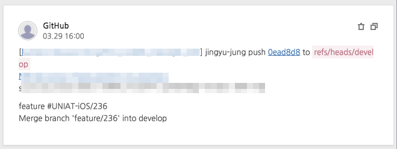

NHNent가 만든 협업 서비스 Dooray
2018-03-29
-읽음
JIRA vs Line Works vs Dooray 직접 사용해본 후기
JIRA : 강력한 스프린트 관리 기능! But, 위키가 쌓이면 쌓일수록 최신화 안되는 문서들이 가득, 문서찾기도 힘듦ㅠㅜ
Line Works : 네이버 메일, 드라이브, 캘린더를 그대로 가져와서 익숙하다!
Dooray : 처음에 배우기 어렵다…. 하지만 익숙해지면 이만한게 없다!! 빠른 문서찾기, 태그! 메신저, 메일, 프로젝트, 드라이브 안되는게 없다!
Dooray의 강력한 기능들!
HOOK을 통해서 자동으로 업무 등록, 댓글등록이 가능해요
- 빌드를 하거나 이슈가 발생했을때 바로바로 업무등록 및 수정 알림!

우선순위, 태그, 완료일, 마일스톤 지정까지 상세하게!
- 업무의 우선순위 확인이나 나중에 검색할 때 엄청 편해요
메신저도 엄청나다
- 현재 자리에 있는지, 자리비움인지 한눈에 볼 수 있어요
업무에 최적인 메일
- 자동 분류 기능으로 쉽게 분류하고 찾아볼 수 있어요
그 외…
말로 표현할 수 없는 정말 유용하고 다양한 기능들
- 마크다운으로 글을 이쁘게 쓰면 PPT 발표모드로도 사용할 수 있어요
- UML도 그릴 수 있죠
- 다른 업무 자체를 태그할 수도 있어요
- 담당자에게 일을 빨리 빨리 넘길 수 있죠
NHN entertainment의 Dooray! 많이 사용해주세요 :)